INT2
background
Motion forecasting is an important component in autonomous driving systems. One of the most challenging problems in motion forecasting is interactive trajectory prediction, whose goal is to jointly forecasts the future trajectories ofinteracting agents.
The continuously changing map information of the existing dataset makes the definition of the domain challenging. Since INT2 is taken from fixed intersections, peak time and non-peak time data can be used as two distinct domains.
To this end, we present a largescale interactive trajectory prediction dataset named INT2 for INTeractive trajectory prediction at INTersections.

A comparison between peak time (a, b, c) and trough time (d, e, f) traffic at the same intersection in our INT2 dataset. They are naturally treated as two different trajectory prediction domains.
-
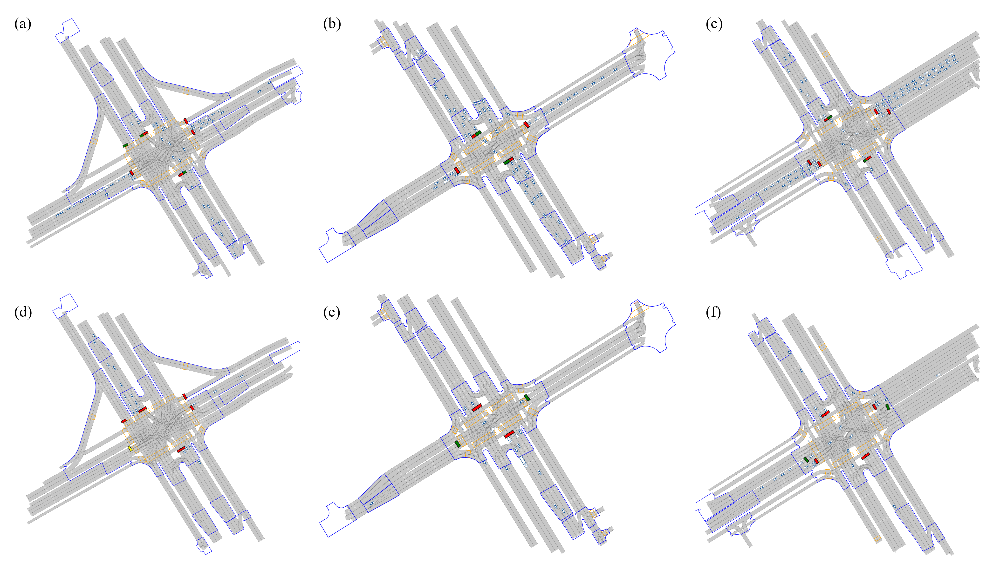
Information
-
High quality
INT2 is captured at 16 different intersections by a multi-sensor system and an offline detection and tracking algorithm stack. The multi-sensor system consists of several RGB cameras and LiDARs mounted on poles. Sensors are calibrated routinely. The offline algorithm stack applies state-of-the-art 3D detection and tracking algorithms on raw data without the concern of latency, and fuses the results with production-level rules.
-
Large scale
INT2 contains about 612,000 scenes with each 1 minute long, counting up to 10,200 hours. By contrast, Waymo Open Motion has about 100,000 scenes with every 20 seconds long, counting up to 570 hours. Apart from the total scale, traffic in each 1-minute segment can cover one complete traffic light cycle.
-
Rich information
INT2 has rich information in several terms. INT2 provides vectorized road maps at all 16 intersections, which is a common input to state-of-the-art trajectory prediction algorithms. INT2 provides 3D agent boxes for small and large vehicles, pedestrians and cyclists. INT provides temporal traffic light information and links to the lanes they have control over.
Dataset Acquisition system
- 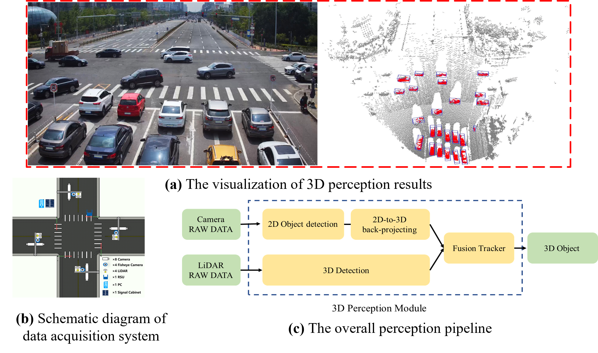
-
10200
Total time (h)
-
107
unique tracks (m)
-
612
Segments (k)
-
60
Segment duration (s)
-
26
Avg track length (s)
-
8
Time horizon (s)
Interaction Define
We propose an algorithm that enables us to efficiently mine our vast dataset for interactions of research value. The algorithm, shown in Fig. 6, consists of three steps:
· filtering out non-interacting pairs based on a spatiotemporal distance threshold,
· normalizing and calculating direction, and
· removing compliant pairs and human inspection.
-
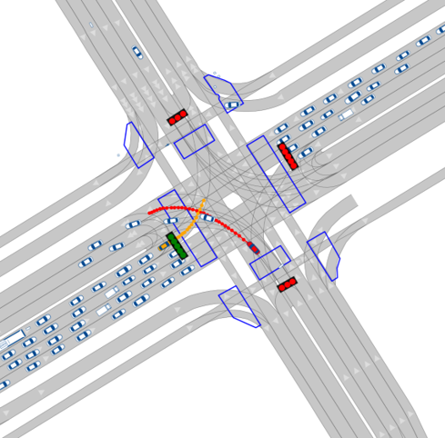 Unprotected Left-turn
-
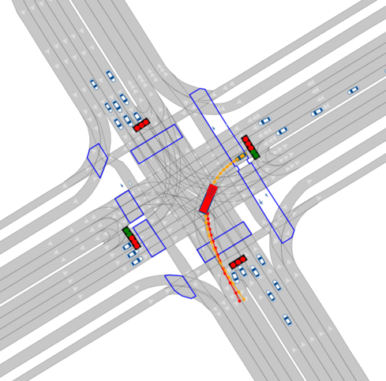 Left-turn Follow
-
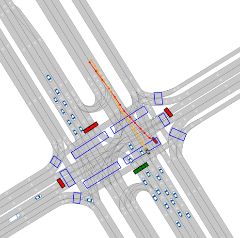 Merge
-
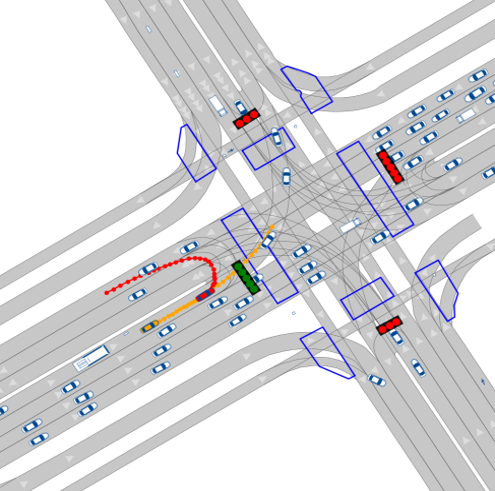 U-turn
-
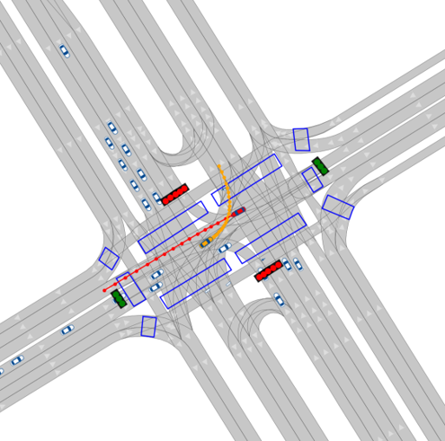 Straight Left-turn
-
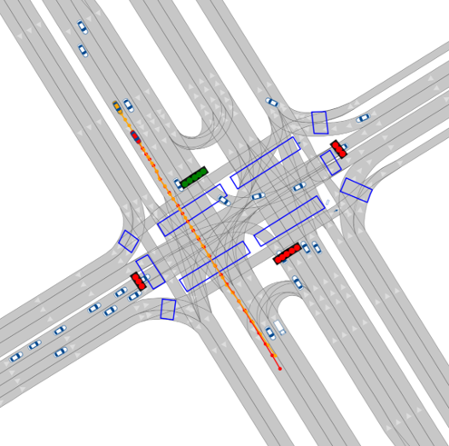 Straight Follow
-
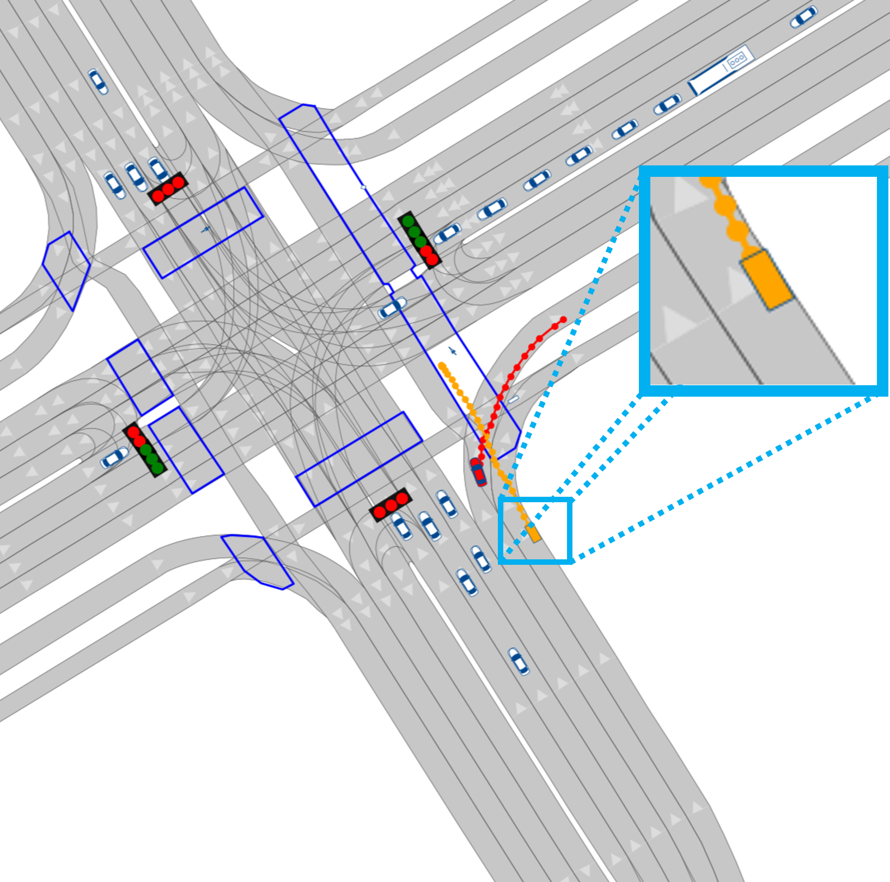 Turn-right Straight Vehicle-Cyclist
-
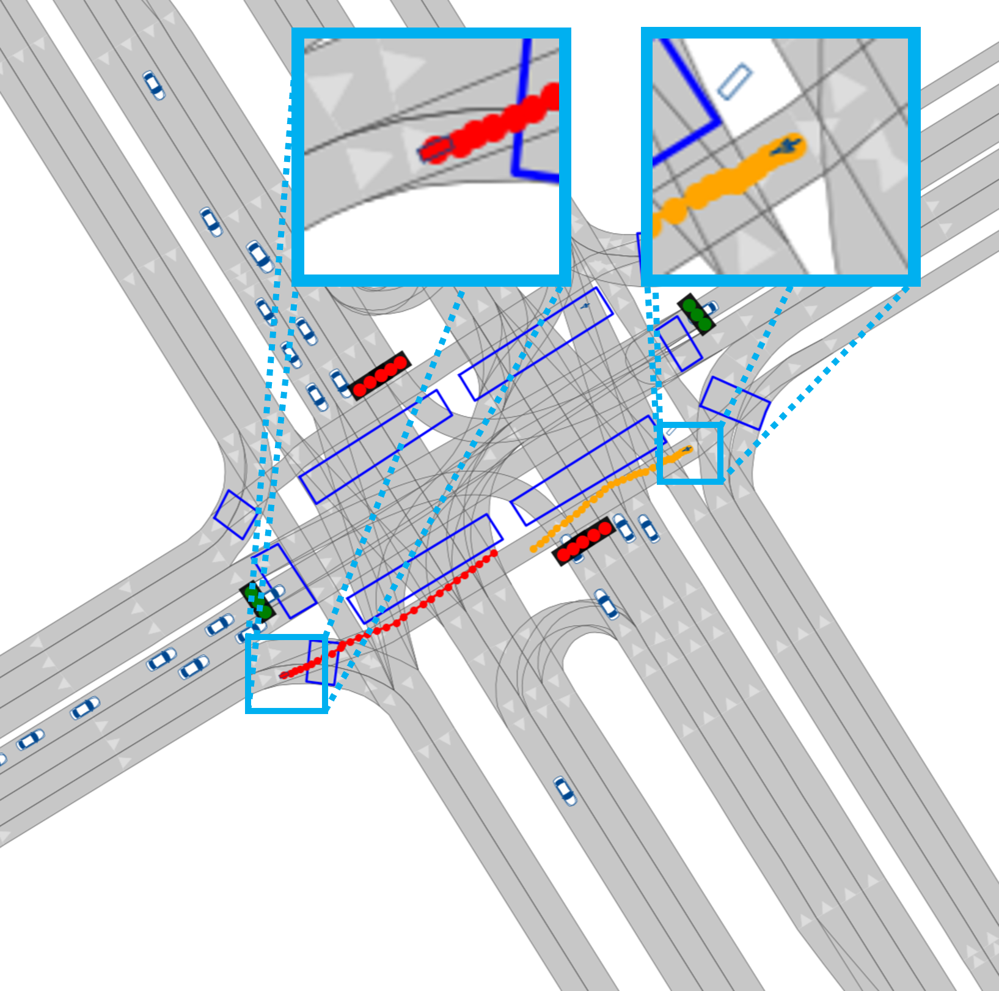 Straight Straight Vehicle-Cyclist
-
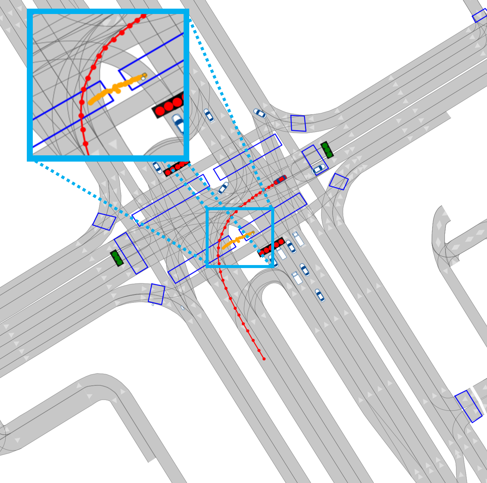 Turn-left Straight Vehicle-Pedestrian

Mail: discover@air.tshinghua.edu.cn
Address: Floor 12, Block C, Tus Technology Building, Tsinghua Science and Technology Park, Haidian District, Beijing

Discover Lab
Official WeChat